Tired of re-typing text trapped inside images?
Get LiveScan!
For iOS and Mac - buy one and get the other for free!
Scan text with your camera
Read Text in 8 Languages
Great for Video Conferences!
Grab Text from images with your camera (iOS) or anywhere on your screen (Mac)
Private and Safe - your images stay on your device.Languages Detected:
English, French, Spanish, German, Italian, Portuguese, Traditional Chinese, Simplified ChineseOther languages often work but unique characteristics, like accents, may not be detected.
14 Built-in Actions:



Plus: Add your own plugins for custom workflows.
Rave Reviews for LiveScan
9to5Mac - Michael Potuck
"In our testing, this is the best iPhone and iPad app to convert images to text."
Impressive, fast and private - Wizard Island
"Incredibly quick at recognizing text in many fonts, colors, sizes, etc. Plus all done on my Mac, without any ugly Google privacy invasion.Amazing that this can be done without the need for external servers. I'll be using this constantly."
Wow! - andrewrodney
"This app is amazing. After 5 minutes of use, I knew I had to get a lifetime license. Works great on both my iphone and Mac.This will save me so much time. The accuracy of text from screen capture and camera is frightening in a good way."
LiveScan a great addition for everyday - GDeichmann
"Just downloaded the App and i made the right choice. After testing it a bit I found it even picks up complicated text that had color and graphic text.It really works very well not to mention the instant access to Google and many other options available. Very slick and extremely useful! Highly recommended!"
I have been wanting this for years - GabrielDoesminecraft
"I have had the need for exactly this app for years. Suddenly I hear about it and I have already used it half a dozen times in one day for real! Works seamlessly and fast.Zero mistakes that I have seen. Thanks to whomever developed this app, it's so rare to see new software that just does something you need. Poof!."
Runs on iOS 14 and macOS Big Sur (both Intel and optimized for Apple Silicon)
You can buy or subscribe to LiveScan:
Lifetime Purchase is just $9.99 USD.
Subscriptions are 99 cents per month or $5.99 USD a year.
LiveScan for iOS LiveScan for Mac